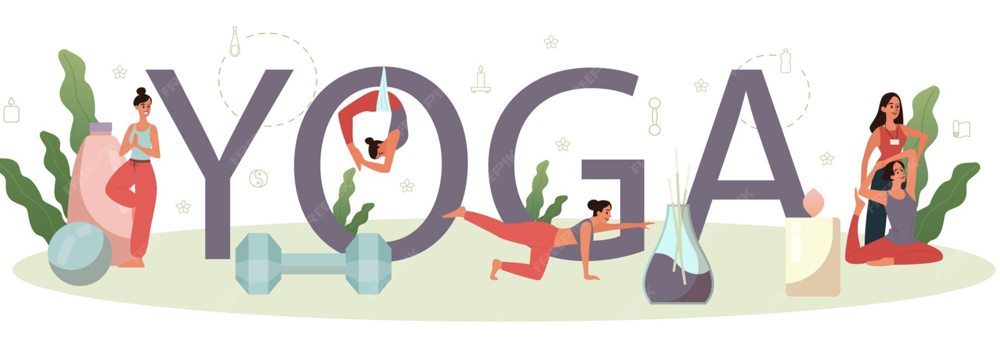
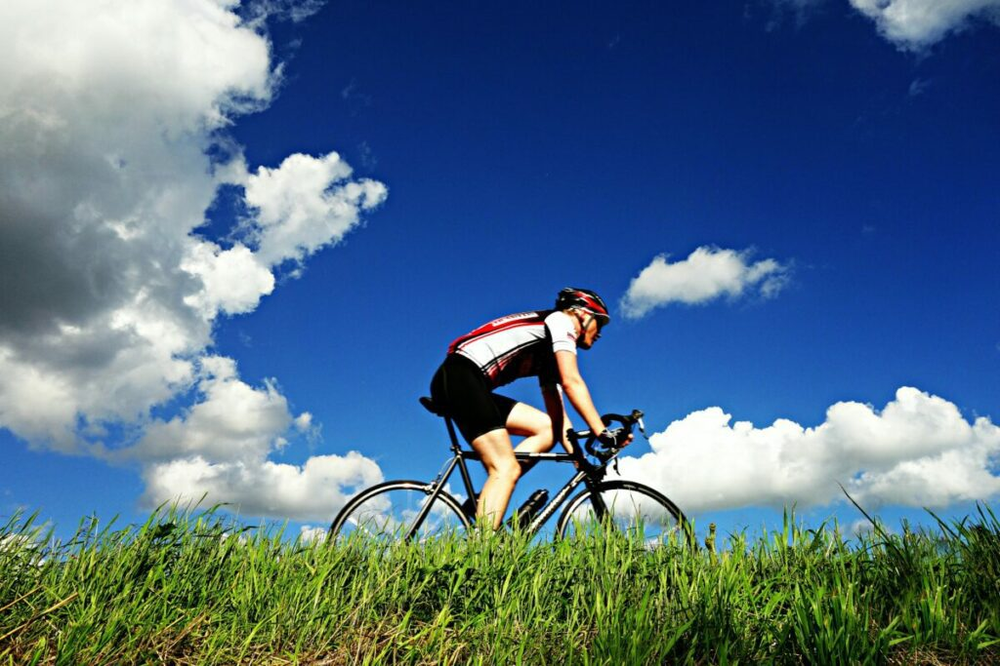
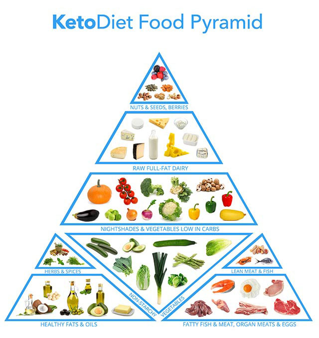
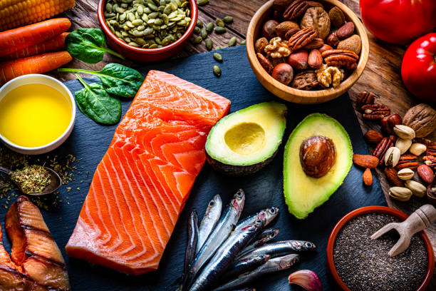
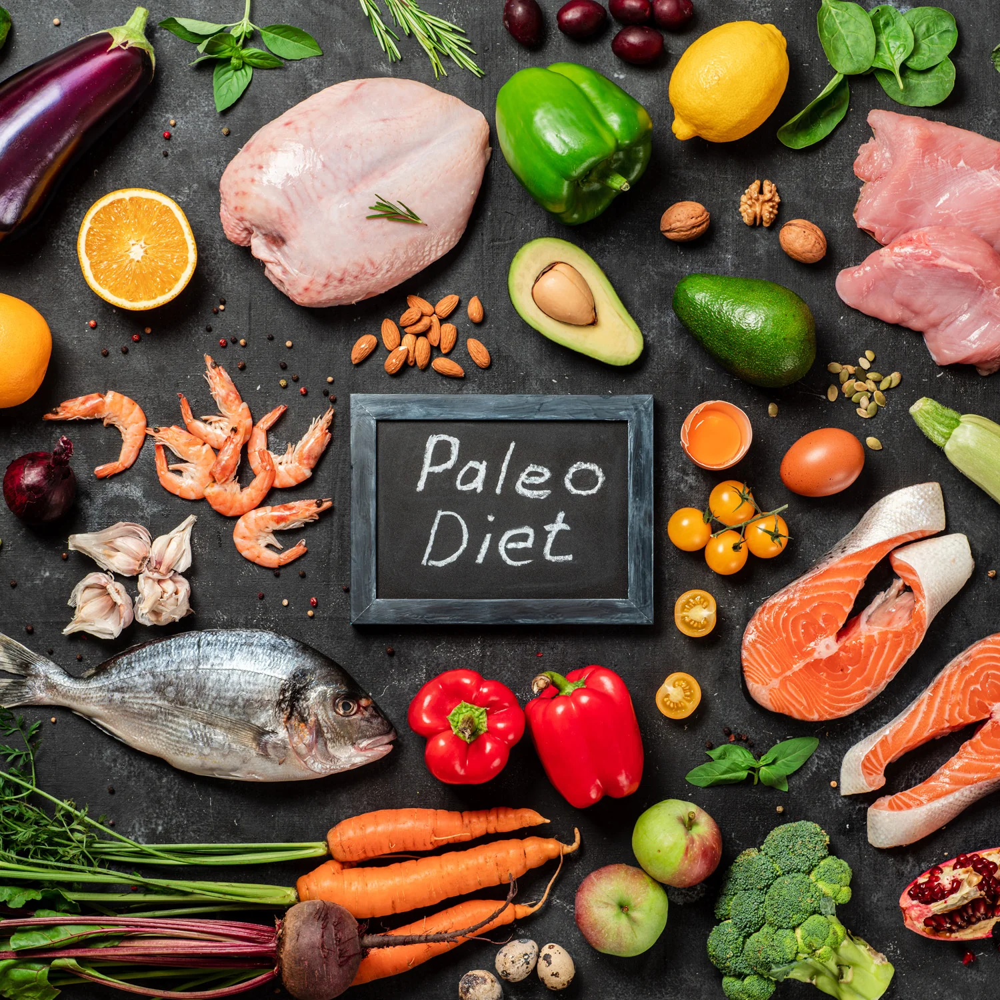
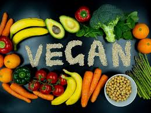
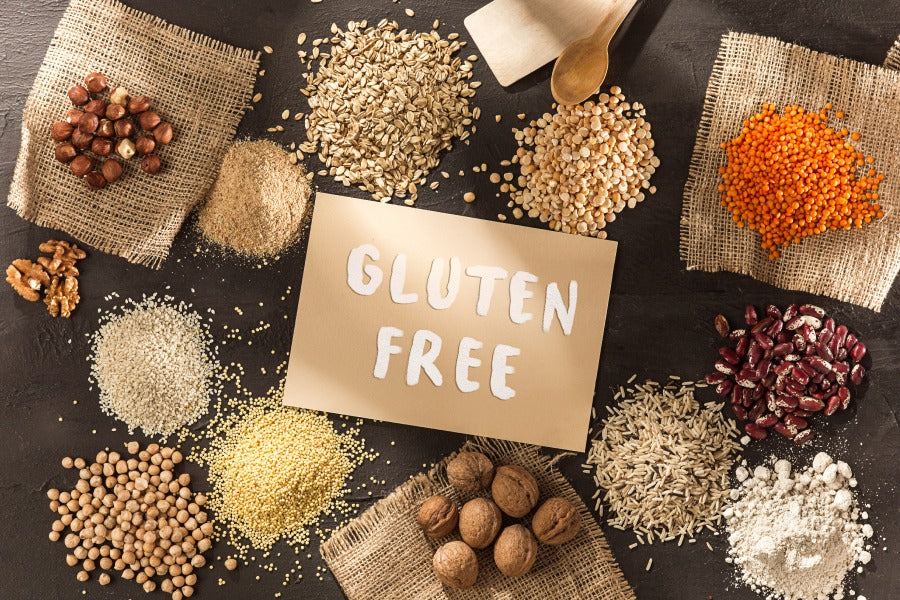

Yoga

Yoga is a holistic practice that combines physical postures, breathing exercises, and meditation to promote overall well-being. It enhances flexibility, strength, and mental clarity.
Benefits of Yoga:
- Improves flexibility and balance
- Reduces stress and anxiety
- Enhances respiratory function
- Boosts cardiovascular health
- Promotes mindfulness and relaxation
Running

Running is a high-impact cardiovascular exercise that strengthens the heart, lungs, and muscles. It helps in weight management and improves mental health by releasing endorphins.
Benefits of Running:
- Enhances cardiovascular fitness
- Aids in weight loss and management
- Strengthens bones and muscles
- Improves mood and reduces depression
- Boosts immune system function
Meditation
Meditation is a mental practice that involves focusing attention and eliminating distractions to achieve a state of relaxation and heightened awareness. It is beneficial for mental clarity and emotional stability.
Benefits of Meditation:
- Reduces stress and anxiety
- Improves concentration and focus
- Enhances emotional health
- Promotes better sleep quality
- Increases self-awareness
Gym

Gym workouts involve a variety of strength training and cardiovascular exercises that help build muscle, improve endurance, and enhance overall fitness levels.
Benefits of Gym Workouts:
- Builds muscle strength and tone
- Improves cardiovascular health
- Aids in weight management
- Enhances flexibility and mobility
- Boosts mental well-being
Cycling

Cycling is a low-impact aerobic exercise that improves cardiovascular fitness, builds muscle strength, and enhances joint mobility. It is also an eco-friendly mode of transportation.
Benefits of Cycling:
- Improves cardiovascular health
- Strengthens leg muscles
- Enhances joint mobility
- Aids in weight management
- Reduces stress levels
Keto Diet

High-fat, low-carb diet that promotes weight loss and sustained energy.
Benefits of Keto Diet:
- Accelerates weight loss
- Improves mental focus
- Increases energy levels
Mediterranean Diet

Focuses on whole grains, vegetables, healthy fats, and lean proteins.
Benefits of Mediterranean Diet:
- Promotes heart health
- Supports brain function
- Rich in antioxidants
Paleo Diet

Focuses on lean meats, fish, fruits, vegetables, and nuts.
Benefits of Paleo Diet:
- Improves digestive health
- Stabilizes blood sugar
- Reduces inflammation
Vegan Diet

Plant-based diet with fruits, vegetables, legumes, grains, and nuts.
Benefits of Vegan Diet:
- Lowers cholesterol levels
- Promotes weight loss
- Environmentally sustainable
Gluten-Free Diet

Eliminates gluten found in wheat, barley, and rye.
Benefits of Gluten-Free Diet:
- Reduces digestive issues
- Increases energy levels
- Supports gut health